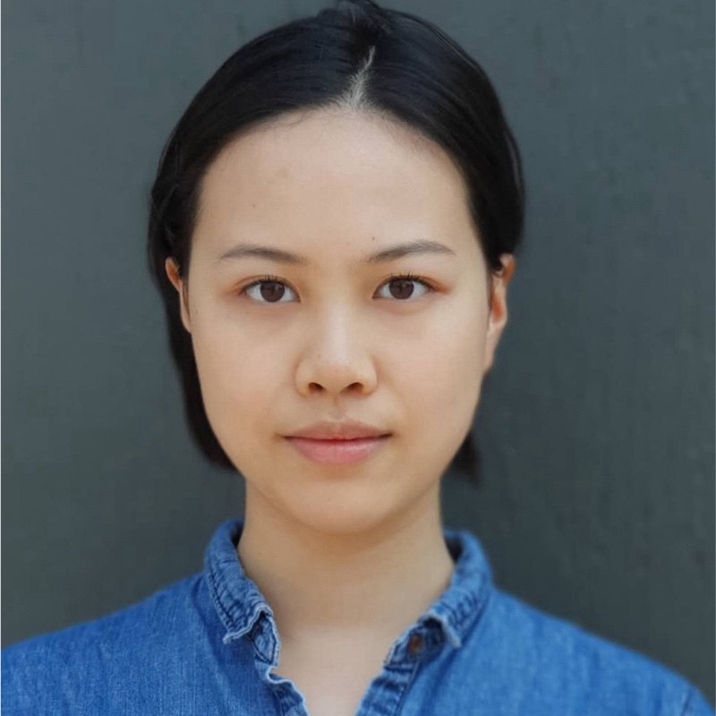

I am a Computer Science undergraduate at the University of British Columbia working with Professor Dongwook Yoon at the Socius Lab. I work in human–computer interaction and human-centered AI, using interactive systems and VR to study how people understand, control, and ethically engage with complex AI technologies.
PASTA: A Scalable Framework for Multi-Policy AI Compliance Evaluation
Yu Yang, Ig-Jae Kim, and Dongwook Yoon
ACM CHI 2026 (full paper, accepted; to be presented April 2026)
PASTA is a scalable framework that uses large language models to evaluate AI systems against multiple real-world AI policies by translating regulatory requirements into machine-interpretable criteria and generating actionable compliance feedback. The system was evaluated through a user study with AI practitioners and an expert study with AI governance experts, demonstrating strong usability, efficiency, and accuracy.
AEGIS (Ongoing)
An interactive research platform exploring personalization, user control, and safety in human–robot
interaction specifically for women. The project investigates how configurable robot behaviors can support different user
preferences and comfort levels through immersive, real-time interaction.
2026 CRA Outstanding Undergraduate Researcher Award (Honorable Mention)
Computing Research Association
2025 Work Learn International Undergraduate Research Awards (WLIURA)
Undergraduate Research Assistant, Socius Lab, UBC (Jan 2025 – Present)
Developing LLM-driven compliance checking tools for AI systems and conducting mixed-methods
user and expert studies in AI governance and human-centered AI.
Software Engineering Intern, Optum (Sept 2024 – Apr 2025)
Worked on cloud-scale medical imaging infrastructure, including GitHub and CI/CD migration,
C# DICOM libraries for streaming medical data, and internal tooling for traceability and compliance.
Digital Platform Assistant, Tang Diabetes Lab, UBC Faculty of Medicine (Sept 2024 – Apr 2025)
Supported onboarding of Type 1 Diabetes patients onto the REACHOUT app and conducted data
analysis to inform system improvements.
Email: yyang124@students.cs.ubc.ca
GitHub: github.com/TrieYang